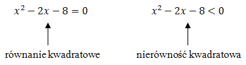
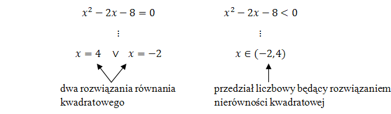

Czym różni się równanie kwadratowe od nierówności kwadratowej?
W równaniach kwadratowych
występuje znak równości (\(=\)).
W nierównościach występuje jeden ze znaków nierówności (\(\lt
,\le ,\gt, \ge \)).  Równanie
kwadratowe może mieć jedno, dwa, lub zero rozwiązań.
Rozwiązaniem nierówności kwadratowej jest
zazwyczaj przedział liczbowy. 
Jak rozwiązywać równania kwadratowe możesz dowiedzieć się
tutaj.
Sposób rozwiązywania nierówności kwadratowych
jest zaprezentowany w następnym rozdziale.